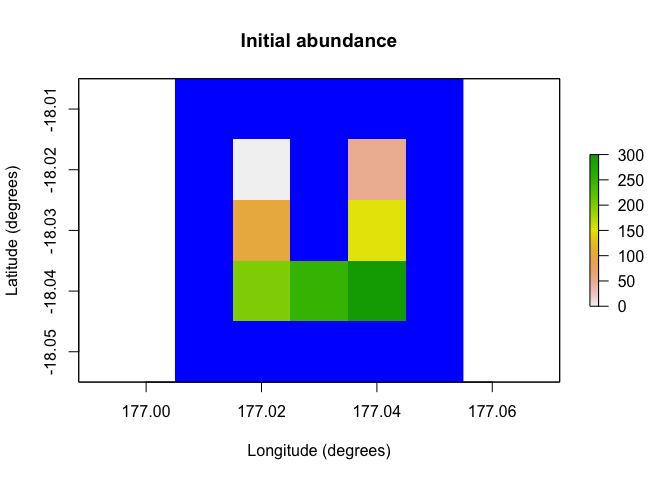
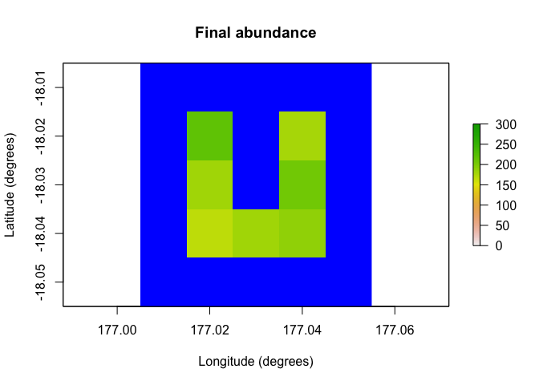

The poems package provides a framework of interoperable R6 (Chang, 2020) classes for building ensembles of viable models via the pattern-oriented modeling (POM) approach (Grimm et al., 2005). The package includes classes for encapsulating and generating model parameters, and managing the POM workflow. The workflow includes:
- Model setup including generated spatial layers and demographic population model parameters.
- Generating model parameters via Latin hypercube sampling (Iman & Conover, 1980).
- Running multiple sampled model simulations.
- Collating summary results metrics via user-defined functions.
- Validating and selecting an ensemble of models that best match known patterns.
By default, model validation and selection utilizes an approximate Bayesian computation (ABC) approach (Beaumont et al., 2002) using the abc package (Csillery et al., 2015). However, alternative user-defined functionality could be employed.
The package includes a spatially explicit demographic population model simulation engine, which incorporates default functionality for density dependence, correlated environmental stochasticity, stage-based transitions, and distance-based dispersal. The user may customize the simulator by defining functionality for trans-locations, harvesting, mortality, and other processes, as well as defining the sequence order for the simulator processes. The framework could also be adapted for use with other model simulators by utilizing its extendable (inheritable) base classes.
Installation
You can install poems from GitHub using:
# install.packages("devtools")
remotes::install_github("GlobalEcologyLab/poems")Example
The following simple example demonstrates how to run a single spatially explicit demographic population model using poems:
library(poems)
# Demonstration example region (U Island) and initial abundance
coordinates <- data.frame(
x = rep(seq(177.01, 177.05, 0.01), 5),
y = rep(seq(-18.01, -18.05, -0.01), each = 5)
)
template_raster <- Region$new(coordinates = coordinates)$region_raster # full extent
template_raster[][-c(7, 9, 12, 14, 17:19)] <- NA # make U Island
region <- Region$new(template_raster = template_raster)
initial_abundance <- seq(0, 300, 50)
raster::plot(region$raster_from_values(initial_abundance),
main = "Initial abundance", xlab = "Longitude (degrees)",
ylab = "Latitude (degrees)", zlim = c(0, 300), colNA = "blue"
)
# Set population model
pop_model <- PopulationModel$new(
region = region,
time_steps = 5,
populations = 7,
initial_abundance = initial_abundance,
stage_matrix = matrix(c(
0, 2.5, # Leslie/Lefkovitch matrix
0.8, 0.5
), nrow = 2, ncol = 2, byrow = TRUE),
carrying_capacity = rep(200, 7),
density_dependence = "logistic",
dispersal = (!diag(nrow = 7, ncol = 7)) * 0.05,
result_stages = c(1, 2)
)
# Run single simulation
results <- population_simulator(pop_model)
results # examine
#> $all
#> $all$abundance
#> [1] 1047 1111 1167 1308 1320
#>
#> $all$abundance_stages
#> $all$abundance_stages[[1]]
#> [1] 628 659 676 791 766
#>
#> $all$abundance_stages[[2]]
#> [1] 419 452 491 517 554
#>
#>
#>
#> $abundance
#> [,1] [,2] [,3] [,4] [,5]
#> [1,] 53 100 127 163 218
#> [2,] 92 141 165 189 177
#> [3,] 153 166 159 177 181
#> [4,] 158 166 157 194 207
#> [5,] 173 190 172 201 167
#> [6,] 211 173 203 182 181
#> [7,] 207 175 184 202 189
#>
#> $abundance_stages
#> $abundance_stages[[1]]
#> [,1] [,2] [,3] [,4] [,5]
#> [1,] 29 58 68 88 120
#> [2,] 53 91 88 113 115
#> [3,] 95 95 92 111 100
#> [4,] 95 100 99 109 130
#> [5,] 108 115 93 126 91
#> [6,] 125 102 121 122 102
#> [7,] 123 98 115 122 108
#>
#> $abundance_stages[[2]]
#> [,1] [,2] [,3] [,4] [,5]
#> [1,] 24 42 59 75 98
#> [2,] 39 50 77 76 62
#> [3,] 58 71 67 66 81
#> [4,] 63 66 58 85 77
#> [5,] 65 75 79 75 76
#> [6,] 86 71 82 60 79
#> [7,] 84 77 69 80 81
raster::plot(region$raster_from_values(results$abundance[, 5]),
main = "Final abundance", xlab = "Longitude (degrees)",
ylab = "Latitude (degrees)", zlim = c(0, 300), colNA = "blue"
)
Further examples utilizing the POM workflow and more advanced features of poems can be found in the accompanying vignettes.
Citation
You may cite poems in publications using our software paper in Methods in Ecology and Evolution:
Fordham, D. A., Haythorne, S., Brown, S. C., Buettel, J. C., & Brook, B. W. (2021). poems: R package for simulating species’ range dynamics using pattern‐oriented validation. Methods in Ecology and Evolution, 12(12), 2364-2371.
References
Beaumont, M. A., Zhang, W., & Balding, D. J. (2002). ‘Approximate Bayesian computation in population genetics’. Genetics, vol. 162, no. 4, pp, 2025–2035. doi:10.1093/genetics/162.4.2025
Chang, W. (2020). ‘R6: Encapsulated Classes with Reference Semantics’. R package version 2.5.0. Retrieved from https://CRAN.R-project.org/package=R6
Csillery, K., Lemaire L., Francois O., & Blum M. (2015). ‘abc: Tools for Approximate Bayesian Computation (ABC)’. R package version 2.1. Retrieved from https://CRAN.R-project.org/package=abc
Grimm, V., Revilla, E., Berger, U., Jeltsch, F., Mooij, W. M., Railsback, S. F., Thulke, H. H., Weiner, J., Wiegand, T., DeAngelis, D. L., (2005). ‘Pattern-Oriented Modeling of Agent-Based Complex Systems: Lessons from Ecology’. Science vol. 310, no. 5750, pp. 987–991. doi:10.1126/science.1116681
Iman R. L., Conover W. J. (1980). ‘Small sample sensitivity analysis techniques for computer models, with an application to risk assessment’. Commun Stat Theor Methods A9, pp. 1749–1842. doi:10.1080/03610928008827996